If Everybody Is A Printer
for Degree Project
Editorial, UX, Web / 2025
If Everybody Is A Printer is Ash Ma’s BFA Graphic Design thesis project at the Rhode Island School of Design. It is an inquiry into the entanglement of human hands, machines, and the act of printing.
Special thanks to Bob for Meridian Printing, Lois from DWRI, José from Buena Gráfica Social Studio, and Julia from RISD Typeshop, as my dearest friends and also important mentors, for sharing their stories in Providence, RI.
Their voices are printed in physical books, self-built object readers, and websites. The web version is available at if-printer.net.

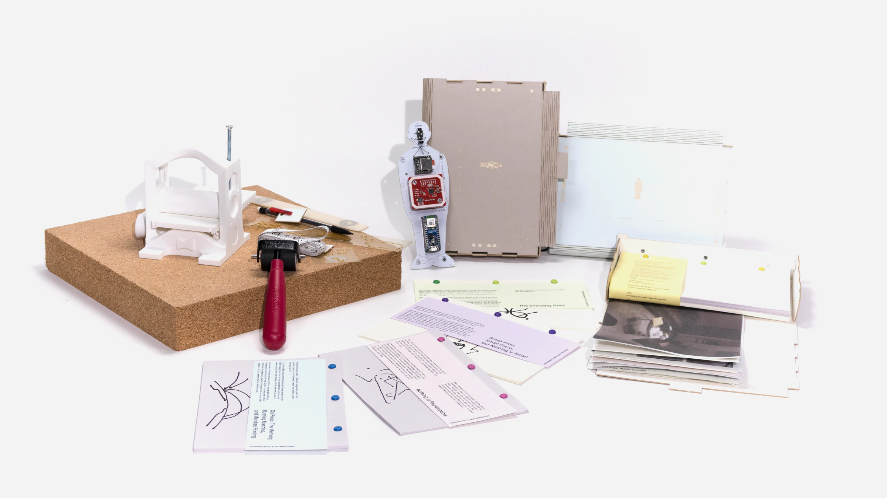
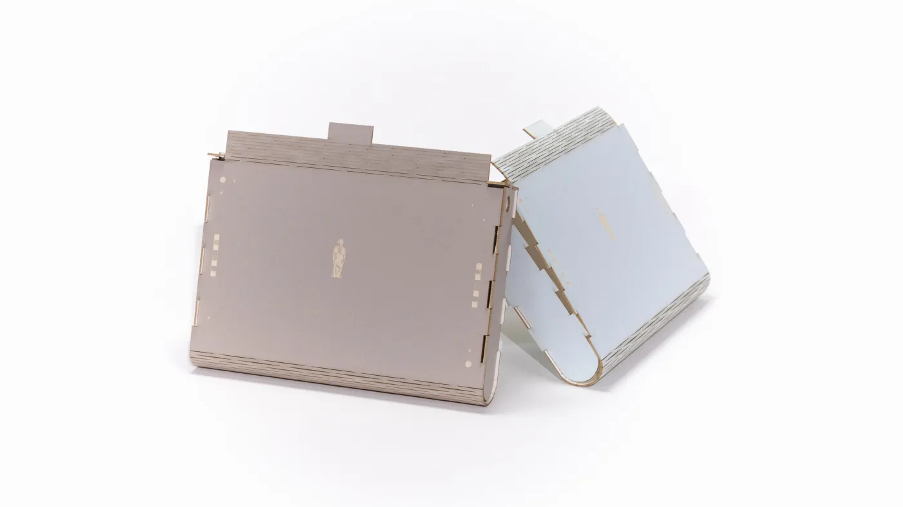
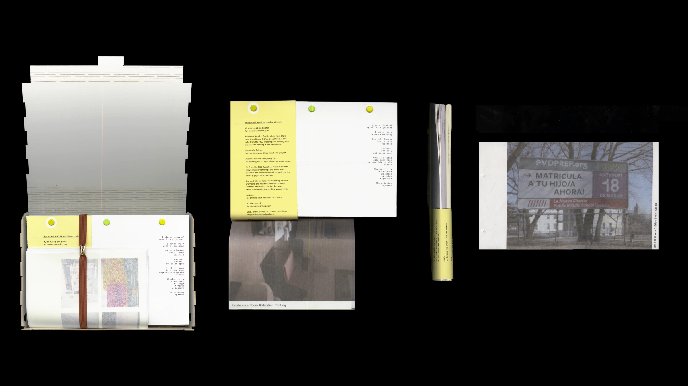
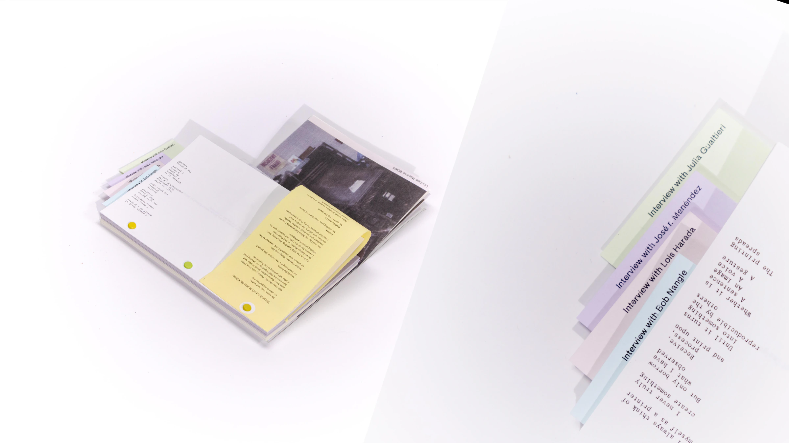
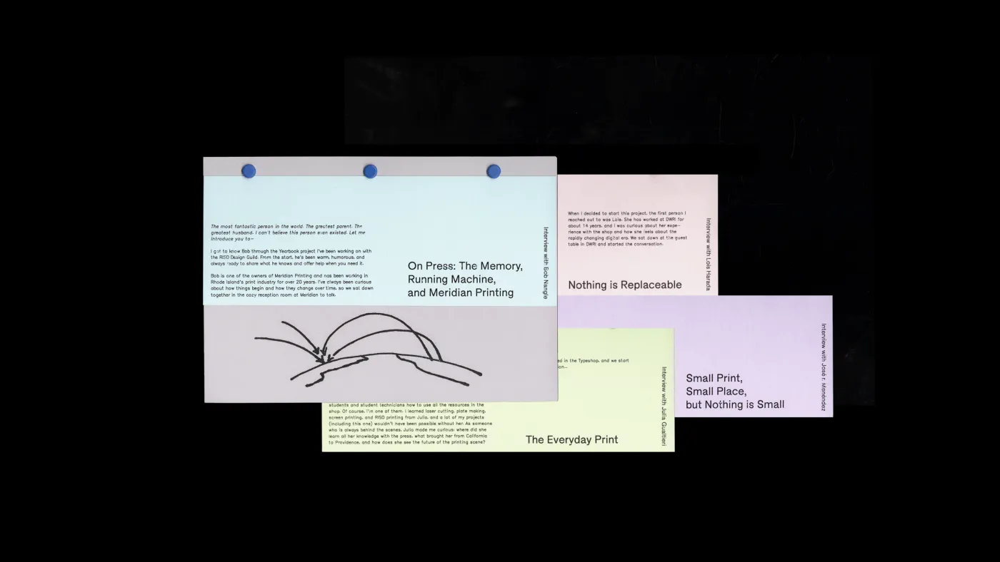
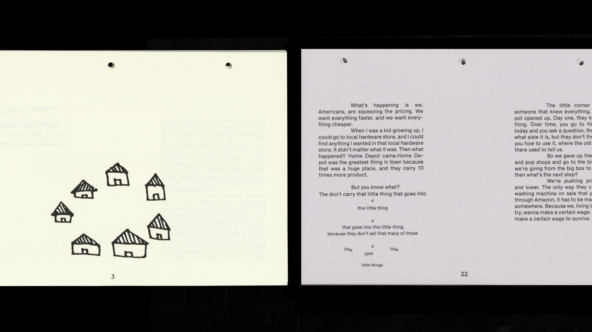
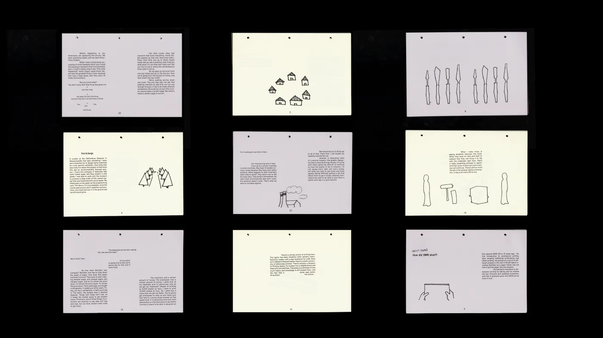
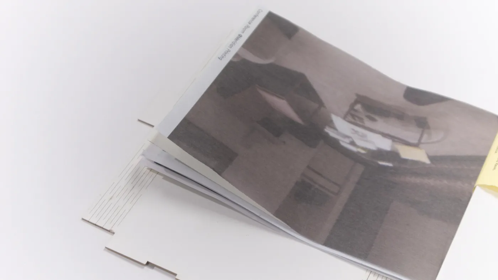
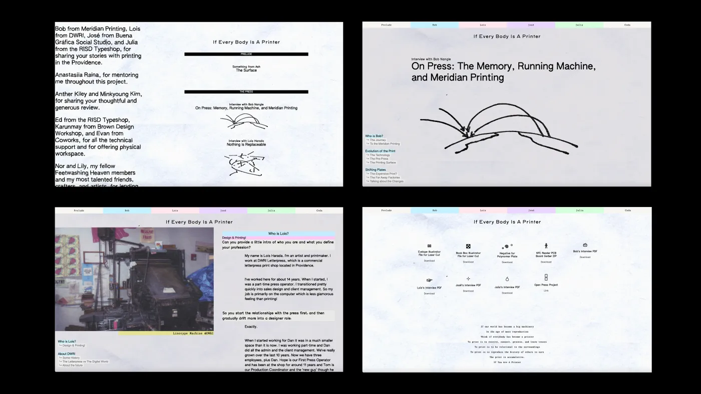
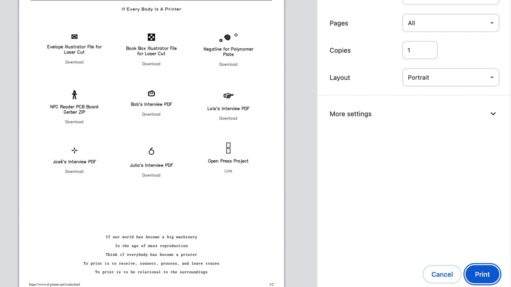

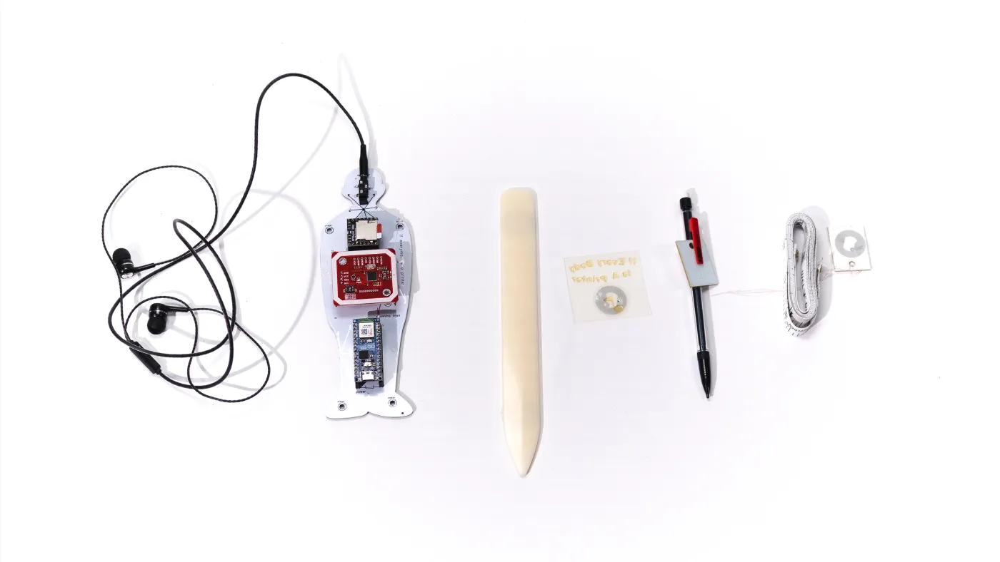
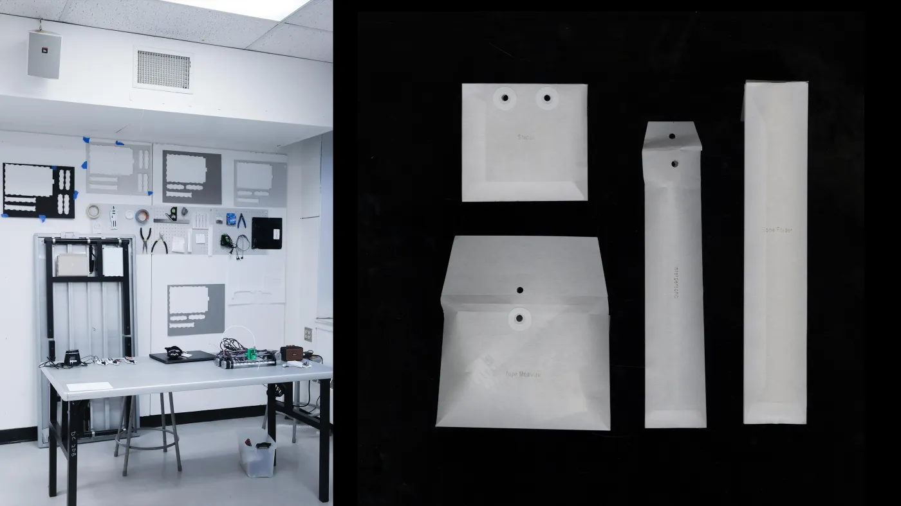
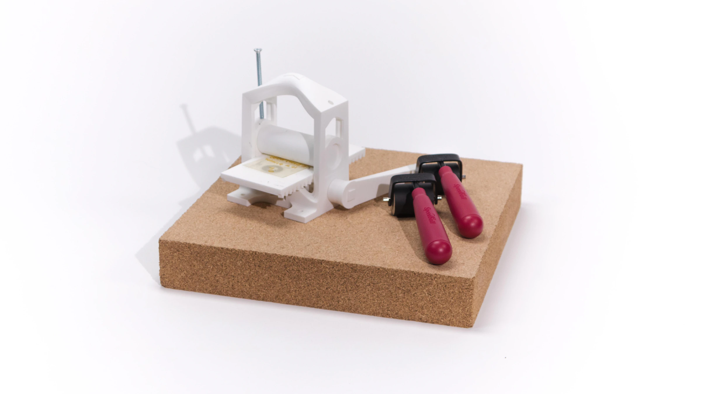
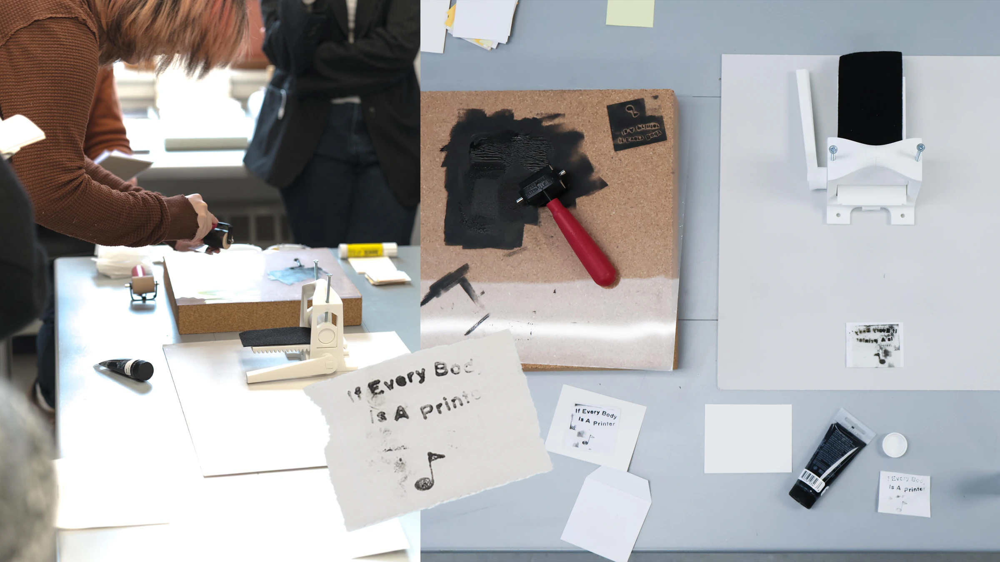
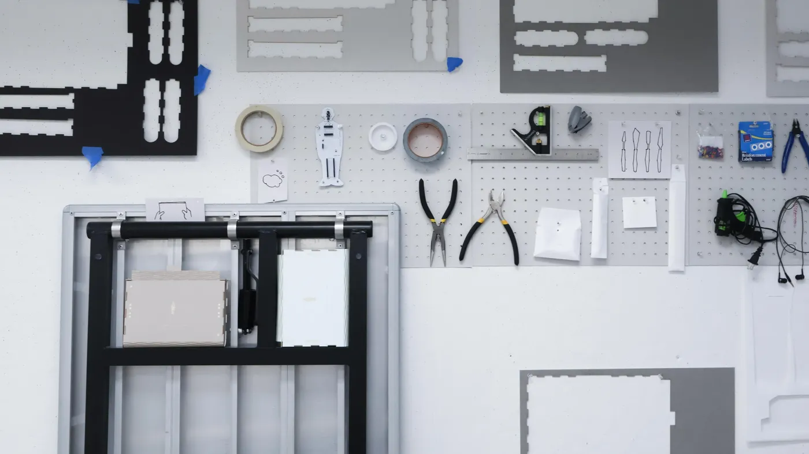
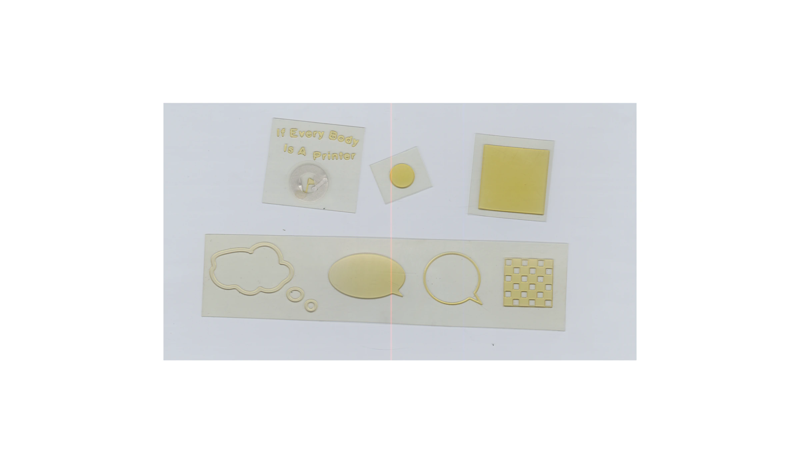